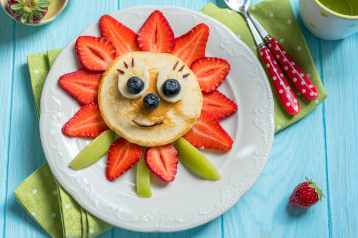
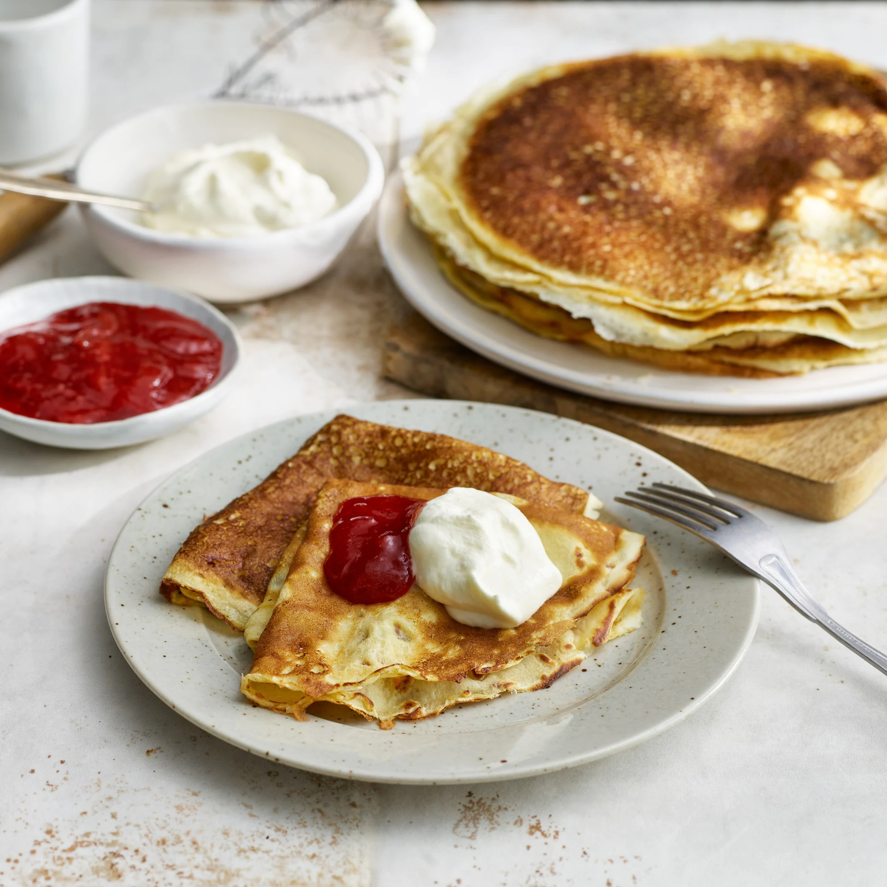

Pannkakor

Gör såhär:
- Smält smöret och blanda ihop samtliga ingredienser i en bunke.
- Låt smeten stå och svälla i cirka fem minuter.
- Stek på båda sidorna tills gyllenbruna.
- Ta fram topping, till exempel bär eller socker och smör.
- Servera!

Om receptet:
- Under 45 min
- 5 ingredienser
- Klimatsmart